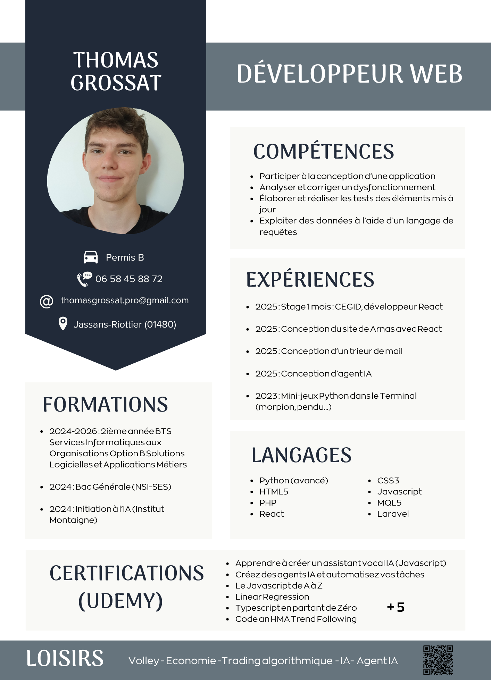
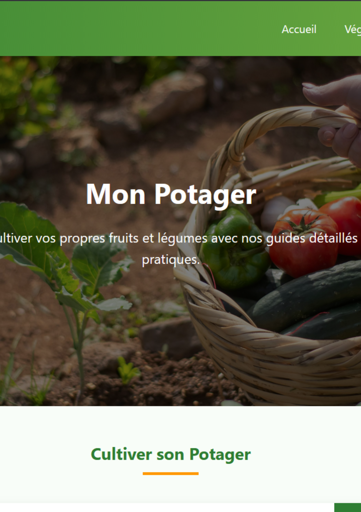
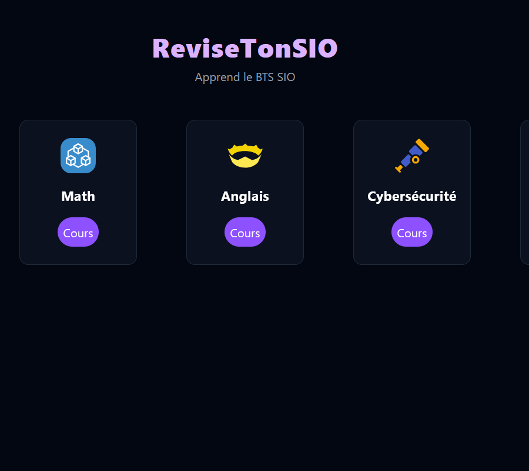
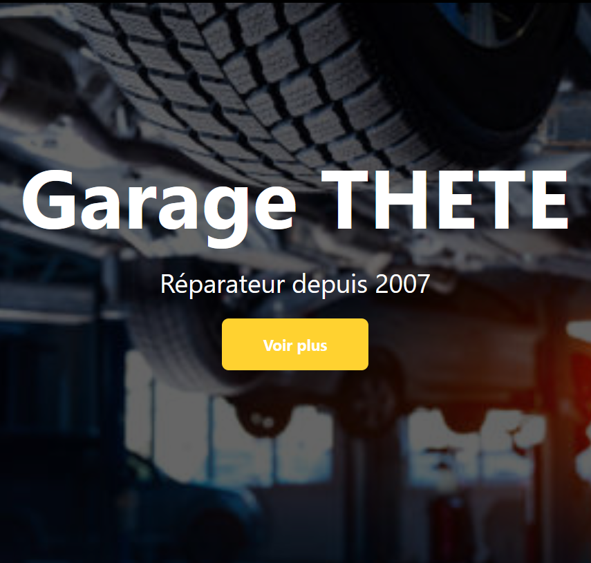
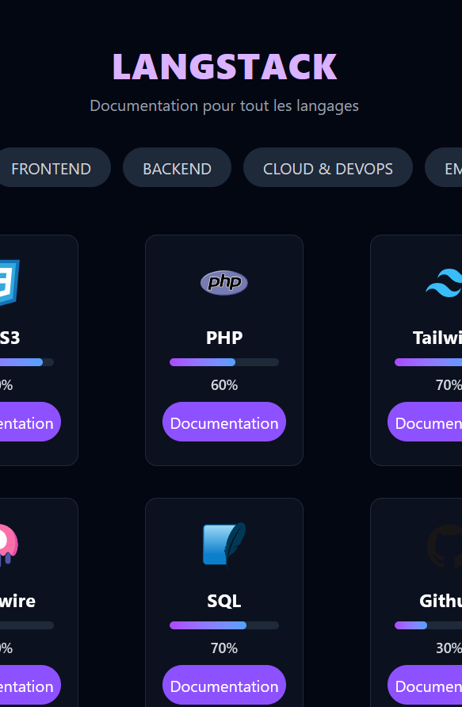
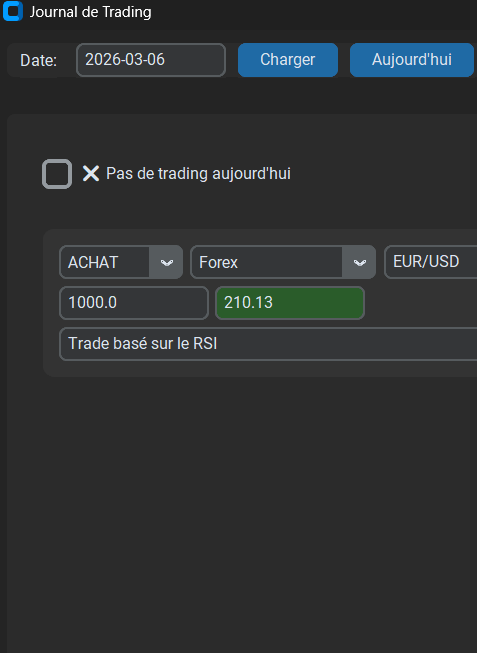
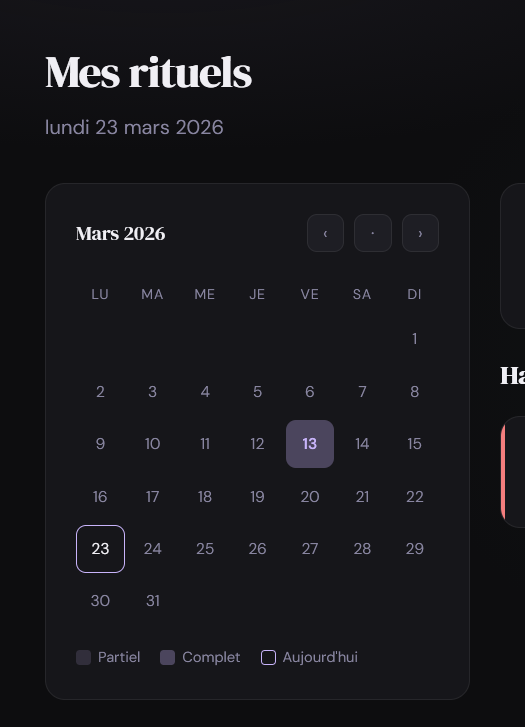

Bonjour ! Je suis un développeur passionné par la création de sites web et d’applications modernes. J’aime apprendre de nouvelles technologies et relever des défis techniques. Et j'aime les baby-foots !


Un site web interactif permettant aux utilisateurs de rechercher les plantes qu'ils souhaitent et d'obtenir des informations détaillées à leur sujet. Il inclut une section de conseils et un potager virtuel. Projet de BTS SIO 2ieme année

Un site web développé en HTML-CSS-JS pour pouvoir l'héberger simplement. Il sert à réviser le BTS SIO, pour moi, la classe, et potentiellement les futures classes de SIO. Disponible sur : revisetonsio.netlify.app

Un site web réaliser lors du stage de 2ième années du BTS SIO SLAM. Disponible sur : garage-thete.netlify.app

Un site web développé aussi en HTML-CSS-JS pour pouvoir L'héberger facilement. C'est un site personnel surtout, pour pouvoir réviser certains langages en cas de besoin ou avoir une doc personnalisé. Disponible sur : langastack.netlify.app

Encore en cours de développement. Une application de journal de trading, journaliers, pour rentrer les positions prises en trading. Avec un jour, gains, pertes, sur quels devises. Une page de récapitulatif sur les mois, années.

Un site de habit tracker. Pouvoir définir des habitudes à réaliser chaque jour, semaine ou mois. Un calendrier inspiré de github calendar contribute. Un CRUD complet.